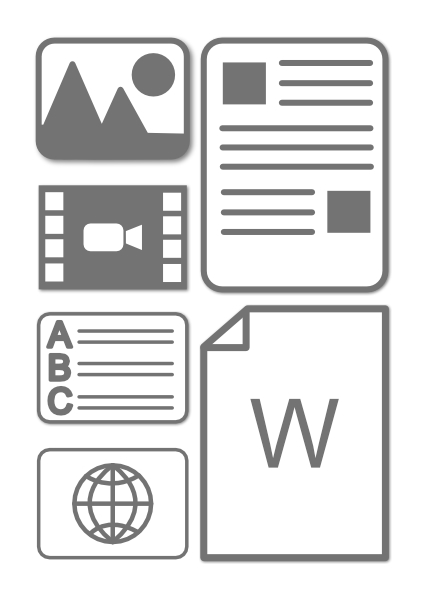

A learning object (LO) can be almost any object that you may create, include, or upload into your course. Most of the components of a course, such as images, text, and quizzes are considered learning objects. In the broader sense, an entire module of a course is considered a learning object and can be published in it's entirety to the LOR.
A learning object can be: